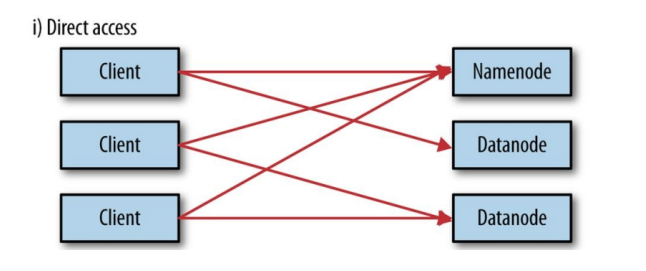

胡思乱想
HDFS，是Hadoop Distributed File System的简称，是Hadoop抽象文件系统的一种实现。Hadoop抽象文件系统可以与本地系统、Amazon S3等集成，甚至可以通过Web协议（webhsfs）来操作。HDFS的文件分布在集群机器上，同时提供副本进行容错及可靠性保证。例如客户端写入读取文件的直接操作都是分布在集群各个机器上的，没有单点性能压力。
HDFS的小目标
设计目标
· 存储非常大的文件
· 采用流式的数据访问方式: HDFS基于这样的一个假设：最有效的数据处理 模式是一次写入、多次读取数据集经常从数据源生成或者拷贝一次
· 运行于商业硬件上HDFS不适合的应用类型
·低延时的数据访问
·大量小文件
·多方读写，需要任意的文件修改
HDFS几个核心概念
- Blocks
物理磁盘中有块的概念，磁盘的物理Block是磁盘操作最小的单元，读写操作均以Block为最小单元，一般为512 Byte。文件系统在物理Block之上抽象了另一层概念，文件系统Block物理磁盘Block的整数倍。通常为几KB。Hadoop提供的df、fsck这类运维工具都是在文件系统的Block级别上进行操作。
HDFS的Block块比一般单机文件系统大得多，默认为128M。HDFS的文件被拆分成block-sized的chunk，chunk作为独立单元存储。比Block小的文件不会占用整个Block，只会占据实际大小。例如， 如果一个文件大小为1M，则在HDFS中只会占用1M的空间，而不是128M。
HDFS的Block为什么这么大？
是为了最小化查找（seek）时间，控制定位文件与传输文件所用的时间比例。假设定位到Block所需的时间为10ms，磁盘传输速度为100M/s。如果要将定位到Block所用时间占传输时间的比例控制1%，则Block大小需要约100M。
但是如果Block设置过大，在MapReduce任务中，Map或者Reduce任务的个数 如果小于集群机器数量，会使得作业运行效率很低。
Block抽象的好处
block的拆分使得单个文件大小可以大于整个磁盘的容量，构成文件的Block可以分布在整个集群， 理论上，单个文件可以占据集群中所有机器的磁盘。
Block的抽象也简化了存储系统，对于Block，无需关注其权限，所有者等内容（这些内容都在文件级别上进行控制）。
Block作为容错和高可用机制中的副本单元，即以Block为单位进行复制。
- Namenode & Datanode
整个HDFS集群由Namenode和Datanode构成master-worker（主从）模式。Namenode负责构建命名空间，管理文件的元数据等，而Datanode负责实际存储数据，负责读写工作。
###Namenode
Namenode存放文件系统树及所有文件、目录的元数据。元数据持久化为2种形式：
namespcae image
edit log
但是持久化数据中不包括Block所在的节点列表，及文件的Block分布在集群中的哪些节点上，这些信息是在系统重启的时候重新构建（通过Datanode汇报的Block信息）。
在HDFS中，Namenode可能成为集群的单点故障，Namenode不可用时，整个文件系统是不可用的。HDFS针对单点故障提供了2种解决机制：
1）备份持久化元数据
将文件系统的元数据同时写到多个文件系统， 例如同时将元数据写到本地文件系统及NFS。这些备份操作都是同步的、原子的。
2）Secondary Namenode
Secondary节点定期合并主Namenode的namespace image和edit log， 避免edit log过大，通过创建检查点checkpoint来合并。它会维护一个合并后的namespace image副本， 可用于在Namenode完全崩溃时恢复数据。
Secondary Namenode通常运行在另一台机器，因为合并操作需要耗费大量的CPU和内存。其数据落后于Namenode，因此当Namenode完全崩溃时，会出现数据丢失。 通常做法是拷贝NFS中的备份元数据到Second，将其作为新的主Namenode。
在HA（High Availability高可用性）中可以运行一个Hot Standby，作为热备份，在Active Namenode故障之后，替代原有Namenode成为Active Namenode。
###Datanode
数据节点负责存储和提取Block，读写请求可能来自namenode，也可能直接来自客户端。数据节点周期性向Namenode汇报自己节点上所存储的Block相关信息。
- Block Caching
DataNode通常直接从磁盘读取数据，但是频繁使用的Block可以在内存中缓存。默认情况下，一个Block只有一个数据节点会缓存。但是可以针对每个文件可以个性化配置。
作业调度器可以利用缓存提升性能，例如MapReduce可以把任务运行在有Block缓存的节点上。
用户或者应用可以向NameNode发送缓存指令（缓存哪个文件，缓存多久）， 缓存池的概念用于管理一组缓存的权限和资源。
- HDFS Federation
我们知道NameNode的内存会制约文件数量，HDFS Federation提供了一种横向扩展NameNode的方式。在Federation模式中，每个NameNode管理命名空间的一部分，例如一个NameNode管理/user目录下的文件， 另一个NameNode管理/share目录下的文件。
每个NameNode管理一个namespace volumn，所有volumn构成文件系统的元数据。每个NameNode同时维护一个Block Pool，保存Block的节点映射等信息。各NameNode之间是独立的，一个节点的失败不会导致其他节点管理的文件不可用。
客户端使用mount table将文件路径映射到NameNode。mount table是在Namenode群组之上封装了一层，这一层也是一个Hadoop文件系统的实现，通过viewfs:协议访问。
- HDFS HA(High Availability高可用性)
在HDFS集群中，NameNode依然是单点故障（SPOF: Single Point Of Failure）。元数据同时写到多个文件系统以及Second NameNode定期checkpoint有利于保护数据丢失，但是并不能提高可用性。
这是因为NameNode是唯一一个对文件元数据和file-block映射负责的地方， 当它挂了之后，包括MapReduce在内的作业都无法进行读写。
当NameNode故障时，常规的做法是使用元数据备份重新启动一个NameNode。元数据备份可能来源于：
多文件系统写入中的备份
Second NameNode的检查点文件
启动新的Namenode之后，需要重新配置客户端和DataNode的NameNode信息。另外重启耗时一般比较久，稍具规模的集群重启经常需要几十分钟甚至数小时，造成重启耗时的原因大致有：
1） 元数据镜像文件载入到内存耗时较长。
2） 需要重放edit log
3） 需要收到来自DataNode的状态报告并且满足条件后才能离开安全模式提供写服务。
Hadoop的HA方案
- 主备需共享edit log存储
- DataNode需要同时往主备发送Block Report
- 客户端需要配置failover模式（失效备援模式，对用户透明）
- Standby替代Secondary NameNode
采用HA的HDFS集群配置两个NameNode，分别处于Active和Standby状态。当Active NameNode故障之后，Standby接过责任继续提供服务，用户没有明显的中断感觉。一般耗时在几十秒到数分钟。
HA涉及到的主要实现逻辑有
1） 主备需共享edit log存储。
主NameNode和待命的NameNode共享一份edit log，当主备切换时，Standby通过回放edit log同步数据。
共享存储通常有2种选择
NFS：传统的网络文件系统
QJM：quorum journal manager
QJM是专门为HDFS的HA实现而设计的，用来提供高可用的edit log。QJM运行一组journal node，edit log必须写到大部分的journal nodes。通常使用3个节点，因此允许一个节点失败，类似ZooKeeper。注意QJM没有使用ZK，虽然HDFS HA的确使用了ZK来选举主Namenode。一般推荐使用QJM。
2）DataNode需要同时往主备发送Block Report
因为Block映射数据存储在内存中（不是在磁盘上），为了在Active NameNode挂掉之后，新的NameNode能够快速启动，不需要等待来自Datanode的Block Report，DataNode需要同时向主备两个NameNode发送Block Report。
3）客户端需要配置failover模式（失效备援模式，对用户透明）
Namenode的切换对客户端来说是无感知的，通过客户端库来实现。客户端在配置文件中使用的HDFS URI是逻辑路径，映射到一对Namenode地址。客户端会不断尝试每一个Namenode地址直到成功。
4）Standby替代Secondary NameNode
如果没有启用HA，HDFS独立运行一个守护进程作为Secondary Namenode。定期checkpoint，合并镜像文件和edit日志。
如果当主Namenode失败时，备份Namenode正在关机（停止 Standby），运维人员依然可以从头启动备份Namenode，这样比没有HA的时候更省事，算是一种改进，因为重启整个过程已经标准化到Hadoop内部，无需运维进行复杂的切换操作。
NameNode的切换通过代failover controller来实现。failover controller有多种实现，默认实现使用ZooKeeper来保证只有一个Namenode处于active状态。
每个Namenode运行一个轻量级的failover controller进程，该进程使用简单的心跳机制来监控Namenode的存活状态并在Namenode失败时触发failover。Failover可以由运维手动触发，例如在日常维护中需要切换主Namenode，这种情况graceful(优雅的) failover，非手动触发的failover称为ungraceful failover。
在ungraceful failover的情况下，没有办法确定失败（被判定为失败）的节点是否停止运行，也就是说触发failover后，之前的主Namenode可能还在运行。QJM一次只允许一个Namenode写edit log，但是之前的主Namenode仍然可以接受读请求。Hadoop使用fencing来杀掉之前的Namenode。Fencing通过收回之前Namenode对共享的edit log的访问权限、关闭其网络端口使得原有的Namenode不能再继续接受服务请求。使用STONITH技术也可以将之前的主Namenode关机。
最后，HA方案中Namenode的切换对客户端来说是不可见的，前面已经介绍过，主要通过客户端库来完成。
命令行接口
HDFS提供了各种交互方式，例如通过Java API、HTTP、shell命令行的。命令行的交互主要通过hadoop fs来操作。例如：1
2
3hadoop fs -copyFromLocal // 从本地复制文件到HDFS
hadoop fs mkdir // 创建目录
hadoop fs -ls // 列出文件列表
Hadoop文件系统
前面Hadoop的文件系统概念是抽象的，HDFS只是其中的一种实现。Hadoop提供的实现如下图：
Local是对本地文件系统的抽象，hdfs就是我们最常见的，两种web形式（webhdfs，swebhdfs）的实现通过HTTP提供文件操作接口。har是Hadoop体系下的压缩文件，当文件很多的时候可以压缩成一个大文件，可以有效减少元数据的数量。viewfs就是我们前面介绍HDFS Federation张提到的，用来在客户端屏蔽多个Namenode的底层细节。ftp顾名思义，就是使用ftp协议来实现，对文件的操作转化为ftp协议。s3a是对Amazon云服务提供的存储系统的实现，azure则是微软的云服务平台实现。
前面我们提到了使用命令行跟HDFS交互，事实上还有很多方式来操作文件系统。例如Java应用程序可以使用org.apache.hadoop.fs.FileSystem来操作，其他形式的操作也都是基于FileSystem进行封装。我们这里主要介绍一下HTTP的交互方式。
WebHDFS和SWebHDFS协议将文件系统暴露HTTP操作，这种交互方式比原生的Java客户端慢，不适合操作大文件。通过HTTP，有2种访问方式，直接访问和通过代理访问

Namenode和Datanode默认打开了嵌入式web server，即dfs.webhdfs.enabled默认为true。webhdfs通过这些服务器来交互。元数据的操作通过namenode完成，文件的读写首先发到namenode，然后重定向到datanode读取（写入）实际的数据流。
采用代理的示意图如下所示。 使用代理的好处是可以通过代理实现负载均衡或者对带宽进行限制，或者防火墙设置。代理通过HTTP或者HTTPS暴露为WebHDFS，对应为webhdfs和swebhdfs URL Schema。
代理作为独立的守护进程，独立于namenode和datanode，使用httpfs.sh脚本，默认运行在14000端口
除了FileSystem直接操作，命令行，HTTTP外，还有C语言API，NFS，FUSER等方式，这里不做过多介绍。
Java接口
实际的应用中，对HDFS的大多数操作还是通过FileSystem来操作，这部分重点介绍一下相关的接口，主要关注HDFS的实现类DistributedFileSystem及相关类。
- 读操作
可以使用URL来读取数据，或者直接使用FileSystem操作。
URL 获取流1
2
3
4
5InputStream in = null;
try {
in = new URL("hdfs://master/user/hadoop").openStream();
}finally{
IOUtils.closeStream(in);
FileSystem api获取流
· 首先获取FileSystem实例，一般使用静态get工厂方法1
2
3public static FileSystem get(Configuration conf) throws IOException
public static FileSystem get(URI uri , Configuration conf) throws IOException
public static FileSystem get(URI uri , Configuration conf，String user) throws IOException
· 如果是本地文件，通过getLocal获取本地文件系统对象：
1 | public static LocalFileSystem getLocal(COnfiguration conf) thrown IOException |
· 调用FileSystem的open方法获取一个输入流:1
2public FSDataInputStream open(Path f) throws IOException
public abstarct FSDataInputStream open(Path f , int bufferSize) throws IOException
默认情况下，open使用4KB的Buffer，可以根据需要自行设置。
·使用FSDataInputStream进行数据操作
FSDataInputStream是java.io.DataInputStream的特殊实现，在其基础上增加了随机读取、部分读取的能力
·随机读取操作通过Seekable接口定义：1
2
3
4public interface Seekable {
void seek(long pos) throws IOException;
long getPos() throws IOException;
}
- 写数据
在HDFS中，文件使用FileSystem类的create方法及其重载形式来创建，create方法返回一个输出流FSDataOutputStream，可以调用返回输出流的getPos方法查看当前文件的位移，但是不能进行seek操作，HDFS仅支持追加操作。
创建时，可以传递一个回调接口Peofressable，获取进度信息
append(Path f)方法用于追加内容到已有文件，但是并不是所有的实现都提供该方法，例如Amazon的文件实现就没有提供追加功能。
1 | String localSrc = args[0]; |
- 目录操作
使用mkdirs（）方法,会自动创建没有的上级目录
HDFS中元数据封装在FileStatus类中，包括长度、block size，replicaions，修改时间、所有者、权限等信息。使用FileSystem提供的getFileStatus方法获取FileStatus。exists()方法判断文件或者目录是否存在；
列出文件（list），则使用listStatus方法，可以查看文件或者目录的信息
1 | public abstract FileStatus[] listStatus(Path f) throws FileNotFoundException,IOException; |
PathFilter用于自定义文件名过滤，不能根据文件属性进行过滤，类似于java.io.FileFilter。例如下面这个例子排除到给定正则表达式的文件：
1 |
|
- 删除数据
使用FileSystem的delete()方法
1 | public boolean delete(Path f , boolean recursive) throws IOException; |
recursive参数在f是个文件的时候被忽略。如果f是文件并且recursice为true，则删除整个目录，否则抛出异常.
数据流(读写流程）
接下来详细介绍HDFS读写数据的流程，以及一致性模型相关的一些概念。
- 读文件
大致读文件的流程如下：

1）客户端传递一个文件Path给FileSystem的open方法
2）DFS采用RPC远程获取文件最开始的几个block的datanode地址。Namenode会根据网络拓扑结构决定返回哪些节点（前提是节点有block副本），如果客户端本身是Datanode并且节点上刚好有block副本，直接从本地读取。
3）客户端使用open方法返回的FSDataInputStream对象读取数据（调用read方法）
4）DFSInputStream（FSDataInputStream实现了改类）连接持有第一个block的、最近的节点，反复调用read方法读取数据
5）第一个block读取完毕之后，寻找下一个block的最佳datanode，读取数据。如果有必要，DFSInputStream会联系Namenode获取下一批Block 的节点信息(存放于内存，不持久化），这些寻址过程对客户端都是不可见的。
6）数据读取完毕，客户端调用close方法关闭流对象
在读数据过程中，如果与Datanode的通信发生错误，DFSInputStream对象会尝试从下一个最佳节点读取数据，并且记住该失败节点， 后续Block的读取不会再连接该节点
读取一个Block之后，DFSInputStram会进行检验和验证，如果Block损坏，尝试从其他节点读取数据，并且将损坏的block汇报给Namenode。
客户端连接哪个datanode获取数据，是由namenode来指导的，这样可以支持大量并发的客户端请求，namenode尽可能将流量均匀分布到整个集群。
Block的位置信息是存储在namenode的内存中，因此相应位置请求非常高效，不会成为瓶颈。
- 写文件

步骤分解
1）客户端调用DistributedFileSystem的create方法
2）DistributedFileSystem远程RPC调用Namenode在文件系统的命名空间中创建一个新文件，此时该文件没有关联到任何block。 这个过程中，Namenode会做很多校验工作，例如是否已经存在同名文件，是否有权限，如果验证通过，返回一个FSDataOutputStream对象。 如果验证不通过，抛出异常到客户端。
3）客户端写入数据的时候，DFSOutputStream分解为packets（数据包），并写入到一个数据队列中，该队列由DataStreamer消费。
4）DateStreamer负责请求Namenode分配新的block存放的数据节点。这些节点存放同一个Block的副本，构成一个管道。 DataStreamer将packet写入到管道的第一个节点，第一个节点存放好packet之后，转发给下一个节点，下一个节点存放 之后继续往下传递。
5）DFSOutputStream同时维护一个ack queue队列，等待来自datanode确认消息。当管道上的所有datanode都确认之后，packet从ack队列中移除。
6）数据写入完毕，客户端close输出流。将所有的packet刷新到管道中，然后安心等待来自datanode的确认消息。全部得到确认之后告知Namenode文件是完整的。 Namenode此时已经知道文件的所有Block信息（因为DataStreamer是请求Namenode分配block的），只需等待达到最小副本数要求，然后返回成功信息给客户端。
Namenode如何决定副本存在哪个Datanode？
HDFS的副本的存放策略是可靠性、写带宽、读带宽之间的权衡。默认策略如下：
第一个副本放在客户端相同的机器上，如果机器在集群之外，随机选择一个（但是会尽可能选择容量不是太慢或者当前操作太繁忙的）
第二个副本随机放在不同于第一个副本的机架上。
第三个副本放在跟第二个副本同一机架上，但是不同的节点上，满足条件的节点中随机选择。
更多的副本在整个集群上随机选择，虽然会尽量避免太多副本在同一机架上。
副本的位置确定之后，在建立写入管道的时候，会考虑网络拓扑结构。
下面是可能的一个存放策略:

这样选择很好滴平衡了可靠性、读写性能
可靠性：Block分布在两个机架上
写带宽：写入管道的过程只需要跨越一个交换机
读带宽：可以从两个机架中任选一个读取
- 一致性模型
一致性模型描述文件系统中读写操纵的可见性。HDFS中，文件一旦创建之后，在文件系统的命名空间中可见：
1 | Path p = new Path("p"); |
但是任何被写入到文件的内容不保证可见，即使对象流已经被刷新。
1 | Path p = new Path(“p”); |
关闭对象流时，内部会调用hflush方法,但是hflush不保证datanode数据已经写入到磁盘，只是保证写入到datanode的内存， 因此在机器断电的时候可能导致数据丢失，如果要保证写入磁盘，使用hsync方法，hsync类型与fsync（）的系统调用，fsync提交某个文件句柄的缓冲数据。
1 | FileOutputStreamout = new FileOutPutStream(localFile); |
使用hflush或hsync会导致吞吐量下降，因此设计应用时，需要在吞吐量以及数据的健壮性之间做权衡。
另外，文件写入过程中，当前正在写入的Block对其他Reader不可见。
- Hadoop节点距离
在读取和写入的过程中，namenode在分配Datanode的时候，会考虑节点之间的距离。HDFS中，距离没有
采用带宽来衡量，因为实际中很难准确度量两台机器之间的带宽。
Hadoop把机器之间的拓扑结构组织成树结构，并且用到达公共父节点所需跳转数之和作为距离。事实上这是一个距离矩阵的例子。下面的例子简明地说明了距离的计算：

同一数据中心，同一机架，同一节点距离为0
同一数据中心，同一机架，不同节点距离为2
同一数据中心，不同机架，不同节点距离为4
不同数据中心，不同机架，不同节点距离为6
Hadoop集群的拓扑结构需要手动配置，如果没配置，Hadoop默认所有节点位于同一个数据中心的同一机架上。
一次sqoop的离线
从mysql—>hdfs